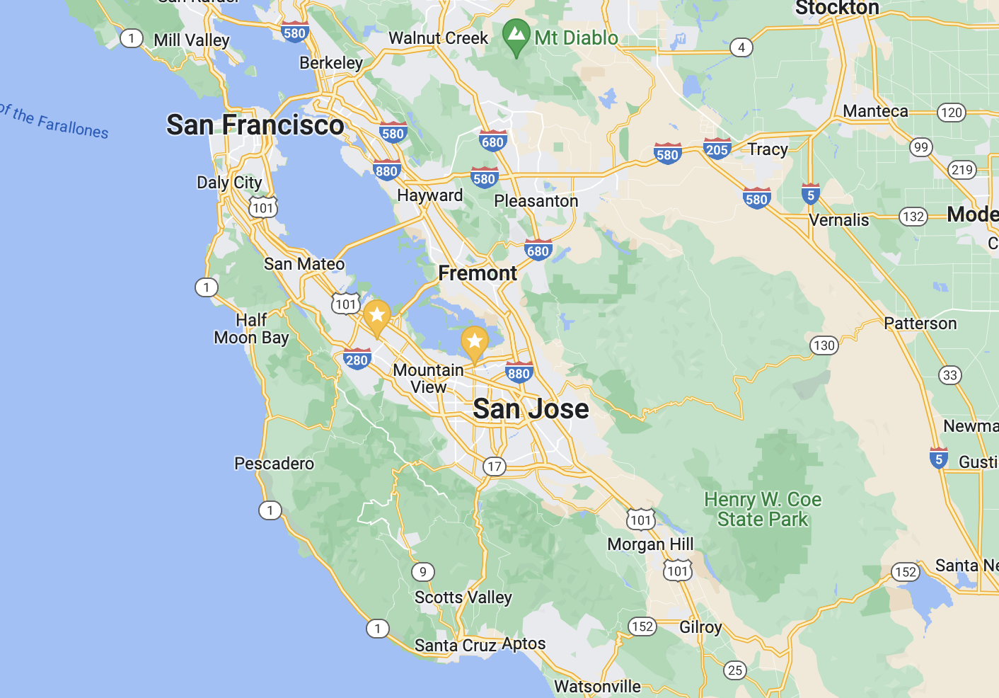

The tools I use to build, manage, and automate.
MDM enrollment, configuration profiles, PPPC policies, and Intune-managed Mac deployments. Deep experience with macOS system internals and enterprise tooling.
Windows Autopilot device provisioning, Entra ID management, Intune policy configuration, and PowerShell-driven device lifecycle automation.
Shell scripting for automation, Linux server administration, self-hosted service deployment, and CLI tooling for day-to-day ops work.
Exchange Online, Microsoft Graph, and Azure AD automation. Scripts for user lifecycle management, compliance, mailbox delegation, and reporting.
Bash and PowerShell scripts for automation, configuration management, and command-line workflows, including mobileconfig/plist profiles for macOS.
HTML, CSS, and JavaScript from scratch. React + Vite for modern web apps. Built interactive tools, games, and media servers.
Self-hosted Forgejo git server, local LLM inference with llama.cpp, DNS configuration, and network infrastructure at home.
Entra ID / Azure AD, conditional access policies, MFA enforcement, Autopilot provisioning, and enterprise security posture hardening.
Git version control, self-hosted repository management, scripted deployments, and infrastructure-as-code mindset applied to IT operations.
A sample of what I've built across automation, endpoint management, and web development.
Multi-stage PowerShell script suite that automates the full Windows Autopilot enrollment workflow: hardware hash collection, Graph API import, profile assignment, Entra group membership, and MDM enrollment, with status output and error handling at each step.
Custom .mobileconfig configuration profiles for corporate Mac management via Intune. Covers browser policy enforcement, Privacy Preferences Policy Control (PPPC), and automated MDM enrollment for large-scale Mac deployments.
Suite of PowerShell scripts for enterprise M365 administration: user onboarding and offboarding, mailbox delegation, litigation hold checks, AD cleanup, compliance searches in Teams, contact creation, and more. Built on Exchange Online and Microsoft Graph.
Self-hosted Forgejo instance as a private Git server for all personal projects. Local LLM inference stack built on llama.cpp for offline AI experimentation. Custom DNS, network segmentation, and Linux server administration throughout.
Built and administered a Red Hat Enterprise Linux server environment supporting the Cadence ASIC electronic design automation (EDA) toolchain for a 40-person engineering team, including license server management and large-format plotting for chip layout drawings.
Replaced an aging on-premises PBX phone system with RingCentral cloud phones company-wide, handling hardware procurement, service configuration, number porting, and ongoing admin management.
Sourced and deployed Microsoft Teams Rooms Pro systems (Yealink A20/A30 meeting bars with CTP18 touch controllers) across multiple office locations, supporting executive, board, and company-wide meetings.
Assorted front-end builds including a Bay Area ice cream map, neighborhood map, onboarding form, tech reference card generator, and several CSS experiments. Straight HTML, CSS, and vanilla JS with no framework.
Bash scripts for Mac endpoint maintenance: automated macOS updates, hostname renaming for asset tracking, OneDrive sync management, and OSINT tooling integration. Designed for quick deployment on managed Macs.
I'm Sean Morrison, an IT engineer with experience across endpoint management, identity, and enterprise infrastructure. My focus is Windows and macOS endpoint engineering: MDM policy buildout, Intune administration, and the work that makes devices reliable at scale.
Most recently I built a greenfield macOS management program from scratch: Apple Business Manager integration, Automated Device Enrollment, Intune configuration profiles enforcing security baselines, enterprise security stack integration, and full operational documentation and handoff. Before that I spent several years as a dedicated IT engineer, owning the full endpoint and M365 stack across US and international offices.
Day to day I work across the Microsoft 365 stack, with a lot of that work backed by shell scripting automation. Outside of work I run a personal homelab, experiment with agentic AI project development, and build front-end web projects, because being able to ship something interactive is a useful complement to ops work.
Bay Area, CA
Based in the South Bay and have worked everywhere in the bay area all the way from Dublin in the East Bay to Foster City on the Peninsula to Mountain View and San Jose.
